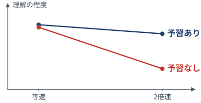
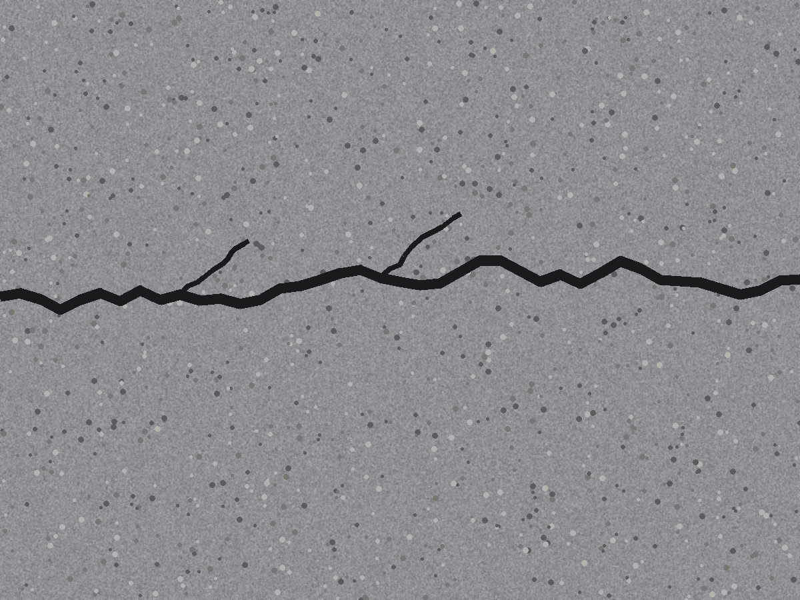
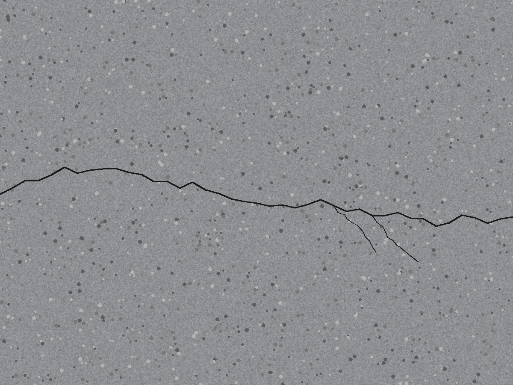
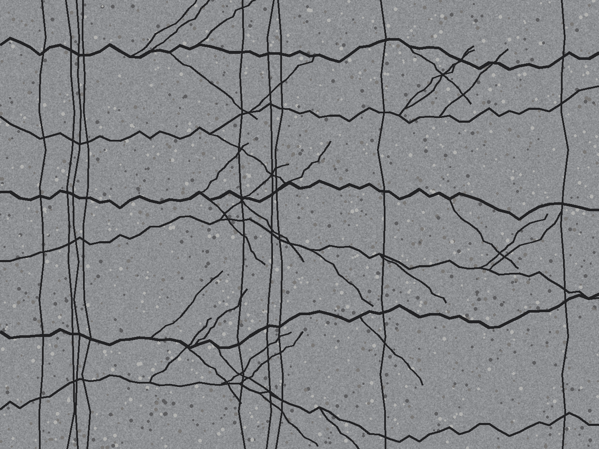
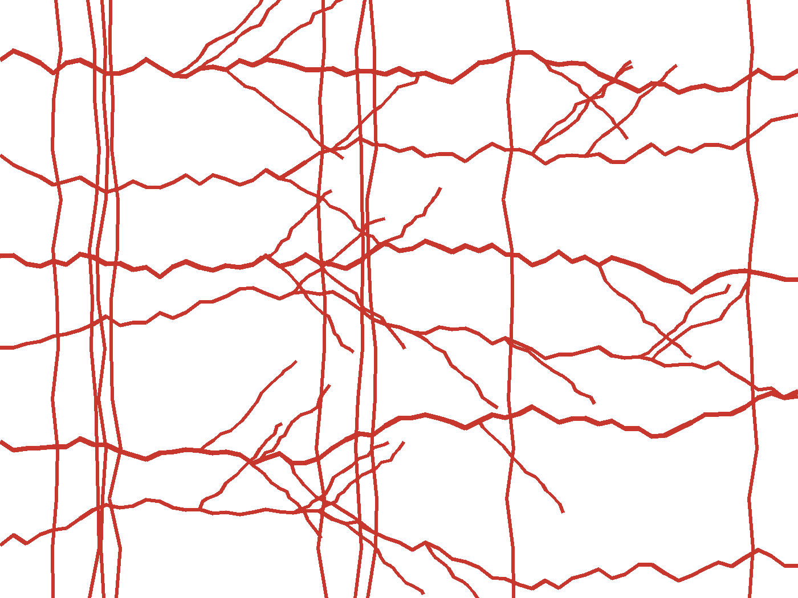
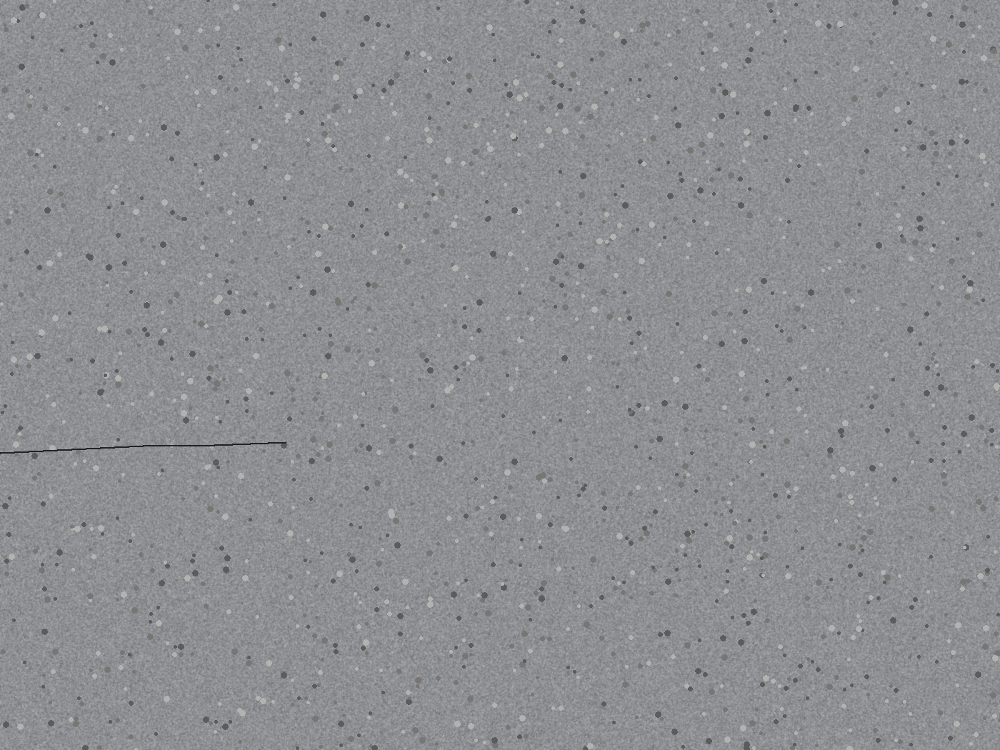
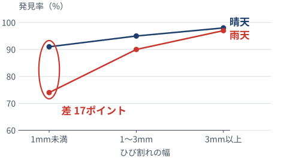
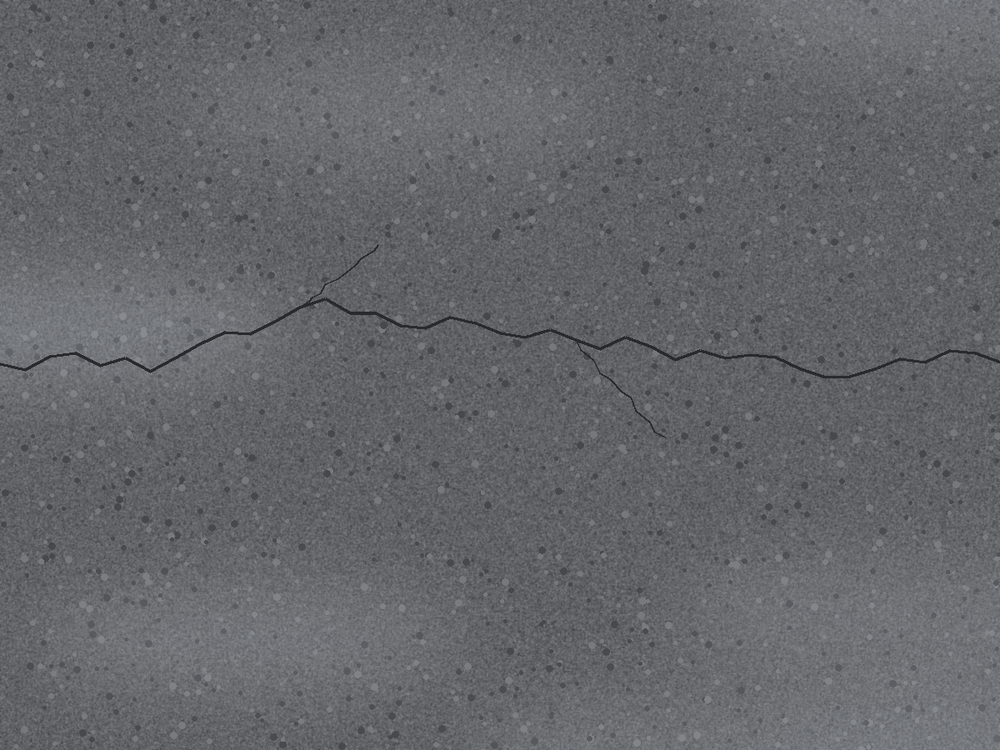

make-slides 同梱資料（題材・数値・画像はすべて架空）
型ごとに別の架空の発表から例を取っている
所属名
氏名
2026年11月18日
チャット導入が費用と質問の幅を両立
よくある質問に自動で回答
回答できない質問はその場で担当者に引き継ぎ
待ち時間は約4分の1に短縮
平均の待ち時間（分）
満足度の平均（5段階）
その場で解決する問い合わせが約7割
問い合わせ全体に占める割合（%）
倍速の影響は予習の有無で差

1人ずつ講義動画を視聴して小テスト
細いひび割れほど見落とし


目視点検での発見率（幅3mm以上と幅1mm未満）[1]
深層学習は高精度だが判断の根拠が不明
幅1mm未満のひび割れの発見率（%）
判断の根拠を示せる手法で、細いひび割れまで自動検出
画像1枚から区間の補修順位を算出

路面画像

ひび割れ画素
区間の指標
補修の順位
ひび割れの面積の割合で傷みを測定

4つの指標の重み付き和で優先度を算出
この区間の $w_j z_j$
優先度 1.45 で120区間のうち1位
幅1mm未満でも9割前後を検出
ひび割れの幅ごとの発見率（%）
雨天は晴天より細いひび割れを見落とし


| 区間 | ひび割れ率（%） | 最大幅（mm） | 交通量（千台/日） | 優先度 | 目視との相関 |
|---|---|---|---|---|---|
| 区間 17 | 12.6 | 3.1 | 8.4 | 1.45 | .62** |
| 区間 42 | 9.8 | 2.6 | 9.1 | 1.12 | .55** |
| 区間 08 | 8.1 | 2.9 | 4.2 | 0.86 | .41* |
| 区間 63 | 6.5 | 1.8 | 6.6 | 0.61 | .38* |
| 区間 91 | 4.9 | 1.2 | 5.3 | 0.40 | .17 |